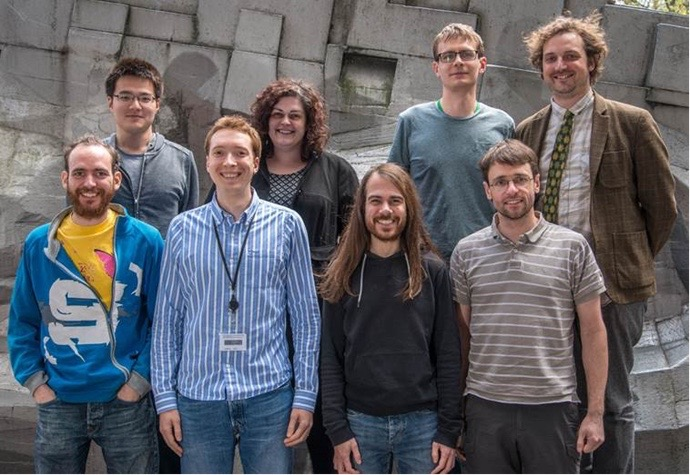

It has been a while since my last post, and a lot has changed. My time at the Department of Geosciences in the University of Oslo as a postdoc research fellow sadly came to a close; it was hard to move on and leave behind my friends and Norwegian life. I have many great memories of Norway, and hope it won't be too long before I return. Perhaps that will even be my last postdoc and the end of my professionally active research career. After 3 postdoc contracts I would say that is a bitter-sweet thought, as there are many pros and many cons of being a postdoc-probably a mix which you won't find in any other job-but 6 years of that lifestyle may be my limit.
Last February I moved to a new type of job, a Research Software Developer. I am now part of a small team at the University College of London, which itself is part of the Research IT services department. There are around eight of us working together supporting various projects from departments across the university, and we are linked to the UK's Software Sustainability Institute. The team are the smiling people pictured! The goal of the team is essentially to use modern software development practices to improve research and researchers, making projects more reliable, usable, correct, and functional beyond the funding period of specific projects, and training researchers in tools and practices that support productivity and reproducibility. We are fostering Open Science practices: something that I find very motivating!

We also run Software Carpentry workshops: the next one is coming up soon. It will be my first since I officially became an instructor, and the first which I will co-lead, so I am very excited about that.
The new job is a big change of pace for me, each day is invariably a significant learning experience. So far I have gotten-to-grips with lots of new tools and computer science methods. I have learnt a lot about programming practices, code testing and various packages, version control, and lately I have been familiarising myself with virtual machines using Docker and Vagrant.
The fun never stops: over the next few months there are lots more big changes to come, including another move - this time to Madrid, my wife's home city. One of the big benefits of moving away from active research is that it has freed me up to focus on other (albeit closely related) interests. My main one being improving science in general through spreading Open Science practices. I hope to have some news about an exciting new project I am starting relating to this soon. I also hope to find the time to improve my website soon, and perhaps post some more blogs and code examples from my three 2016 publications. I am also hoping to indirectly continue my past research by supporting my old collaborators-particularly with the new development methods I am learning-so hopefully there will be more updates on that too in the future.
Go Top
comments powered by Disqus